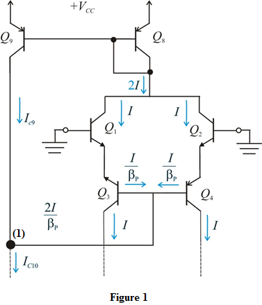

and
and  differ from the ideal value of by
differ from the ideal value of by  .
.
Determine the value of .
.
Thus, the value of for which the currents in the transistors
for which the currents in the transistors  and
and  differ from the ideal value of by
differ from the ideal value of by  is.
is.
Refer to Figure 12.15 in the text book.
Draw the modified circuit.

The current is,
Apply Kirchhoff’s current law at node (1) as shown in Figure 1.
Expand the term up to two terms.
Expand the term up to two terms.
Simplify further.
and differ from the ideal value of by .
Determine the value of.
Thus, the value of for which the currents in the transistors and differ from the ideal value of by is.